Alterações
Alterações técnicas, inovação e manutenção de rotinas do sistema Milkroute.
Versão 1.2.25
Alterar Mapa Coleta
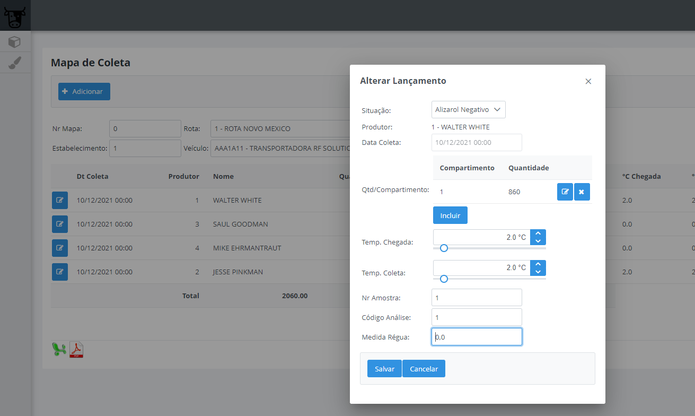 Adicionado campo para permitir alterar a medida da régua do lançamento.
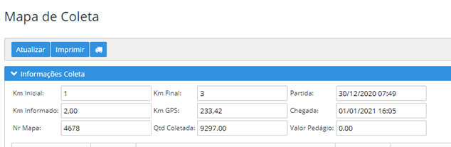
Adicionado campos para visualizarem a data e hora da Partida e Chegada do mapa.
Consulta Análise do Leite
Foi disponibilizado uma nova tela para consulta da Análise do Leite das propriedades, conforme abaixo.
Após selecionar a propriedade, será possivel clicar no botão 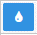 para detalhar as análises da propriedade.
Por padrão, foi definido para que seja visualizado os últimos 4 meses, porém é possível alterar o filtro para um período maior, conforme abaixo: 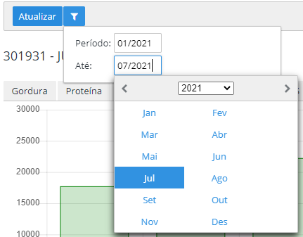
Abaixo as informações referente a análise de leite da propriedade: 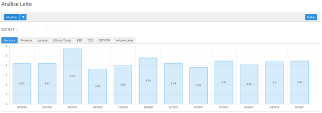
Na mesma tela, também possui uma aba “Volume Leite” na qual é permitido visualizar o leite coletado desta propriedade, de acordo com o período informado no filtro. 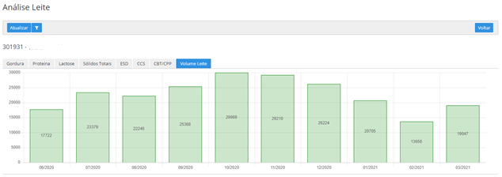
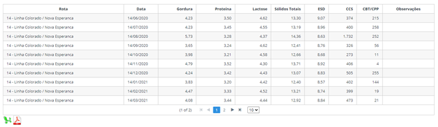
Importar Análise Leite
É possível realizar importação manual de análises de leite das propriedades através de arquivo, separado por ponto e virgulas (;) e que seja salvo em .TXT ou .CSV (Excel).
Importa Análise: Neste botão será possivel realizar a importação da análise conforme layout abaixo:
codigoProdutor;codigoEstabelecimento;codigoRota;data;gordura;proteina;lactose;solidosTotais;esd;ccs;cbt;redutase;observações
301931;1;201;07/07/2021;4.43;3.93;4.44;12.92;8.84;170;220;0;Teste
301931;1;201;07/08/2021;4.43;3.93;4.44;12.92;8.84;170;220;0;Teste
Versão 1.2.23
Dashboard - Filtro por rota

Foi adicionado o código do estabelecimento em frente a descrição da rota, pois estava gerando confusão para localizar a rota correta, isso acontecia para os usuário que tem acesso a mais de um estabelecimento. O mesmo foi feito para a tela de dashboard, relatórios em gerais e consulta de mapas e movimentos de leite.
Consulta Propriedades
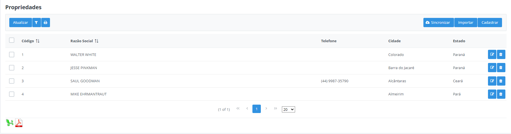
Foi realizado a inclusão de uma nova coluna Situação no relatório em Excel e PDF do cadastro geral de propriedades. Com isso o usuário irá conseguir visualizar se a propriedade está Ativa ou Inativa.
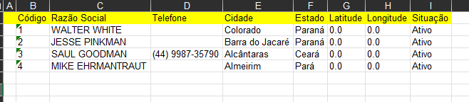
Versão 1.2.22
Detalhes Mapa Coleta
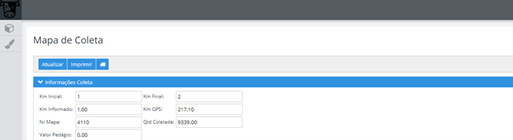
Foi disponibilizado a opção para listar os litros entregue por compartimento através do botão 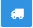.
Esta informação também foi disponibilizada no relatório de mapa da coleta:
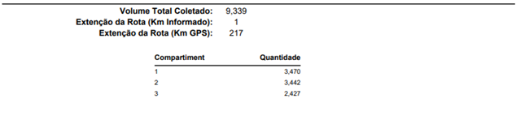
Mapa Propriedades
Incluido opção de consulta para propriedades com e sem localização.
Lista Propriedades sem localização cadastrada.
Lista Propriedades com localização.
Outras alterações/Melhorias
Gráfico Temperaturas Críticas- Realizado ordenação da maior temperatura para menor.Filtro Consulta Mapa- Incluído opção para filtrar por numero do mapa.Ordenar Motivos Não Coleta- Realizado ordenação dos motivos de não coleta por ordem alfabética no aplicativo mobile.
Versão 1.2.21
Consulta Movimentos Leite
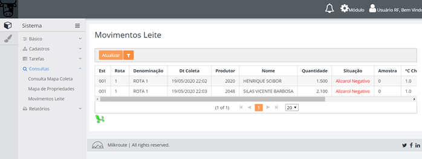
Neste opção é possivel realizar a consulta de moviemotos por Estabelecimento, Rota, Situação, Periodo e Somente Coletas Extra.
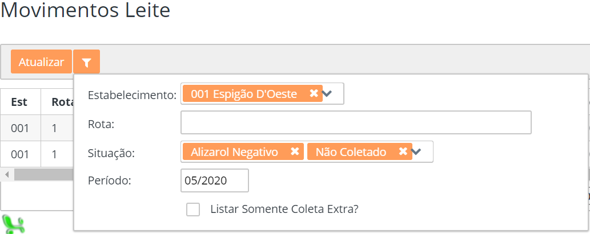 O programa apresenta as seguintes opções de filtro:
Estabelecimento- Informar o(s) estabelecimento(s).Rota- Informar a(s) rota(s).Situação- Informar a(s) situações.Período- Informar o período dos movimentos.Listar Somento Coleta Extra?- Marcar se deseja apresentar coletas extras.
Mapa Recebimento Leite Mensal
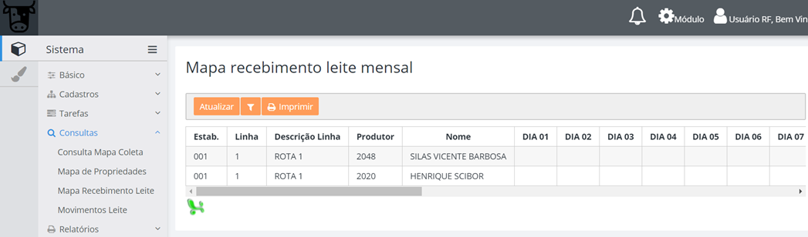
Nesta opção é possível consultar um mapa diário dos lançamentos realizados conforme Estabelecimento, Rota e Período.
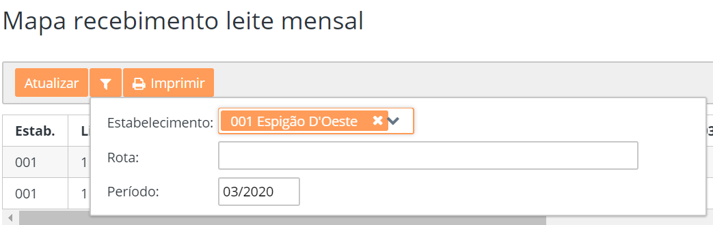 O programa apesenta as seguintes opções de filtro:
Estaebelecimento- Informar o(s) estabelecimento(s).Rota- Informar a(s) rota(s).Período- Informar o periodo dos movimentos;
Impressão de etiquetas
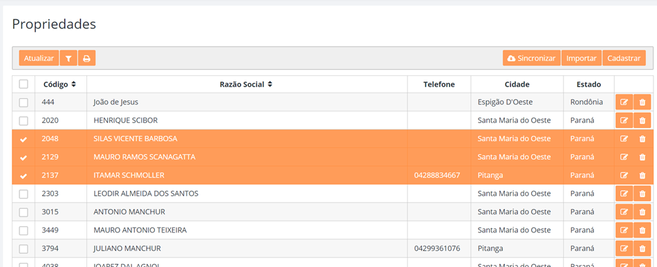
Foram disponibilizadas melhorias para que seja possível selecionar as propriedades que se deseja realizar a impressão de etiquetas.
Ao clicar no botão de impressão  , será apresentado uma tela, para que o usuário possa escolher o relatório em PDF ou diretamente para uma impressora Zebra:
, será apresentado uma tela, para que o usuário possa escolher o relatório em PDF ou diretamente para uma impressora Zebra:

Antes de confirmar, é necessário selecionar um estabelecimento, para geração dos dados complementares da etiqueta. Para utilização da impressora Zebra, é preciso realizar o cadastro prévio do layout da etiqueta no estabelecimento: 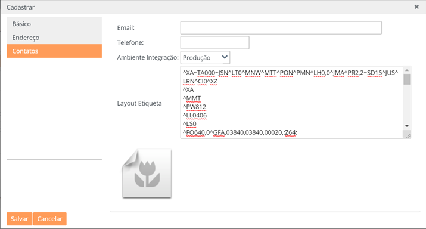
Segue abaixo modelo ZPL contendo alguns variáveis curingas separados por “$$””:
^XA~TA000~JSN^LT0^MNW^MTT^PON^PMN^LH0,0^JMA^PR2,2~SD15^JUS^LRN^CI0^XZ
^XA
^MMT
^PW812
^LL0406
^LS0
^FO640,0^GFA,03840,03840,00020,:Z64:
eJztVj1v2zAQpZQIYOTFASyggBeCXgRqaroU9aICzq4A1v9hnYXwX+iiuotALUFH88/1TrbEDwlNUXT0IUiMw/Pje3fHYwi5xS3+IVI2zdUzOK0mqWQGtzXNhLCewWmtJoR1XYYpUXQn7qeiKpvg0lboRinp5rIZnDmvzTkWuUtX77O6Cuh0Cz9SSYewrvdJiOuMLrozj2MrMelxe9+E1u1Rt0o6Cuu6rgLcnTHmVBij01SIwQTgkNMtIdKpVGO01yJGSNf/dqBdB7W76y6hB749GXHV4FZTpfQlmtFGOeLKUd9pobnpYzACLFnZ27FmRK+s52ydulwBWTka7kxnDjGPua1f5Hu9xMUppYraXFaH3SBkAQqFiIVgNhfN4OjA5ybroGsQcdF1Bw76HL5LaQK+AxCCXyr/TJjmW2OEyF19vROfMKcKCBvkGw2veic+4TZmzMD8cc5GwuxC6B8LVEckpHb+smrihK3fcvFgDEeB1MER/1yKfErA/SBKerjE88EXJ8bjDRbQVjBBXOTJowdUBncD9Q0Co0nTSCqeBBdC8FRQ25HlBEfxoiEfpdJfCX6AKOwtht/hKR8ygVvlr5j73pDVF/fyci7glrh8PSSzfMBFj1JKJfyJ6WtjW4fS4qKF7nZN7MDKZO/hCPCxo4baac9vFeJ4Lr4UZ8Gis0gdvhpxkdtiRQXykZZ6G/AZcaWjj/HiB1iNJHf11eXebzFOSyNQGnX11eUK/4xI8Cq2J44P0kYPSTjvOlW20MdGxU1funS8HzAvV2nW8Kbl7MSxFR0bcaAtxMHbdt3N47FOPRzcmWOH4dizzY04Z2AFDh/wqcbmVsOH0ubSfvSgkJJMwrsjqoFpkbn/Yi6DU/Hgz6jvzLwkTl5wnShMijq0/rG4mJPg2hVQv4X2c3jVswAncMW0M7jSzy1+pXztH9try0gQjVTHMFc5VRziiXEa5qYrgeAQyrn0JMan952g0/+HZiN+H/K3sX59WxNKNlCy7801lz1XGSyir5Aba005YbCYGXw8DN9d7sgyud+9rLJonKz1z7cCnprNp4dvr8TyJcvd7mv0aHEUWFR+4ExKl49UAe4DJx8V8j1avuWeZMn9/iVzcLe4xf+O35htJnA=:9D16
^FO11,16^GB787,374,4^FS
^FO12,302^GB781,0,5^FS
^FT26,267^BQN,2,10
^FH\^FDQA,$qrCode$^FS
^FT19,330^A0N,22,21^FH\^FDPropriedade^FS
^FT19,371^A0N,32,31^FH\^FD$propriedade$^FS
^FT296,73^A0N,28,28^FB321,1,0,C^FH\^FD$empresa1$^FS
^FT383,113^A0N,28,28^FB151,1,0,C^FH\^FD$empresa2$^FS
^FT450,238^A0N,23,24^FB168,1,0,C^FH\^FD$endereco1$^FS
^FT308,276^A0N,23,24^FB455,1,0,C^FH\^FD$endereco2$^FS
^PQ1,0,1,Y^XZ
Será necessário também a instalação do aplicativo Zebra Browser Print: 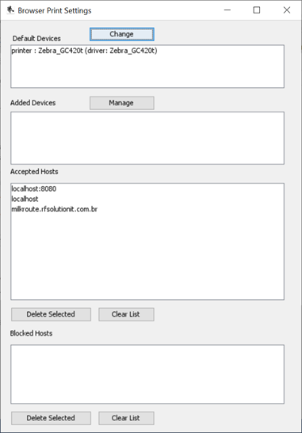